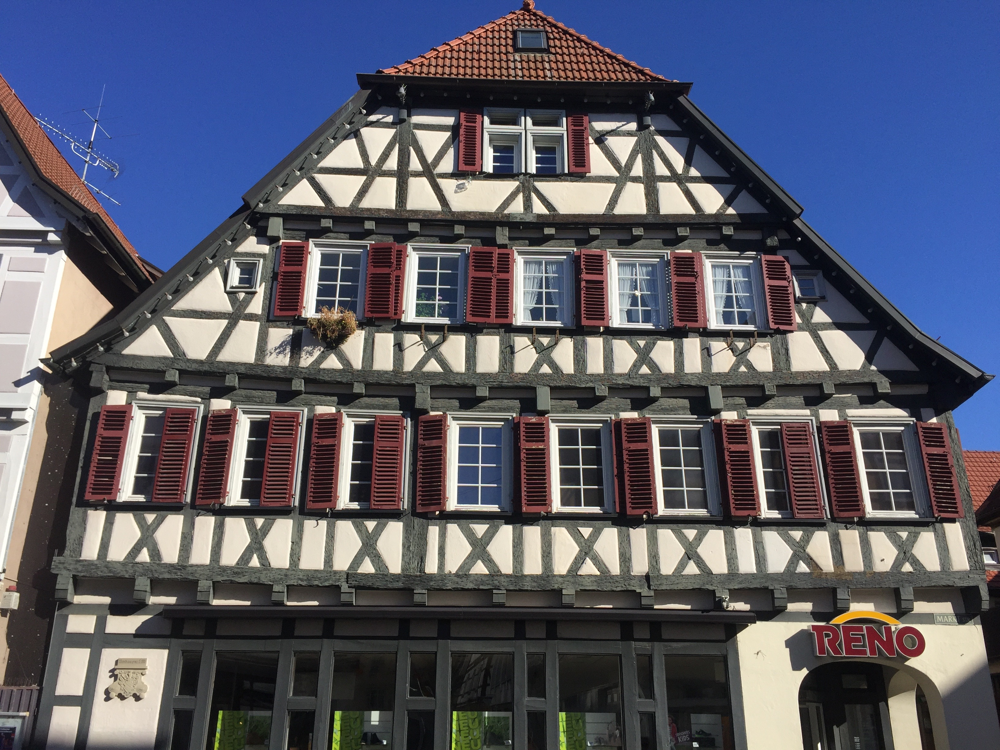
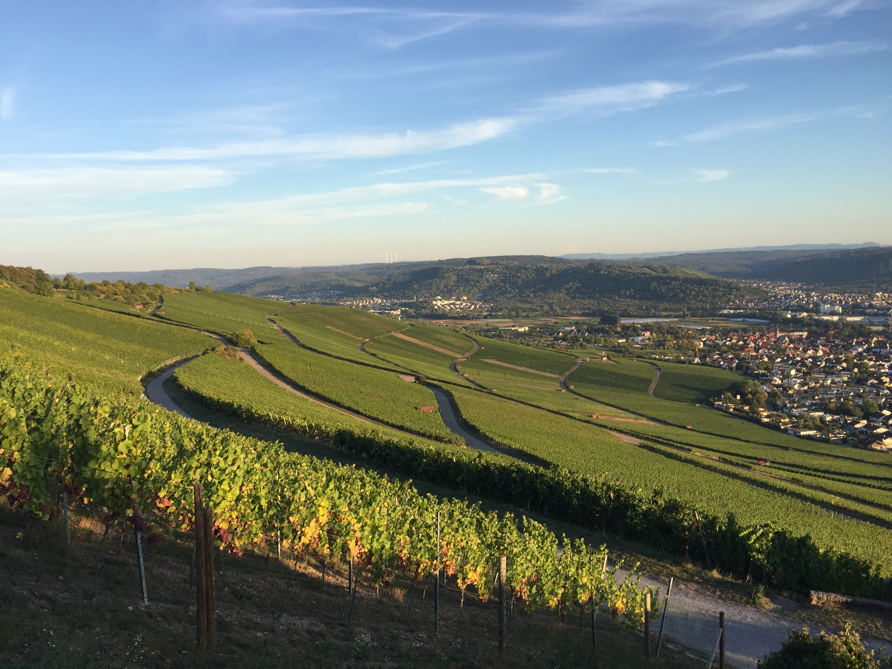
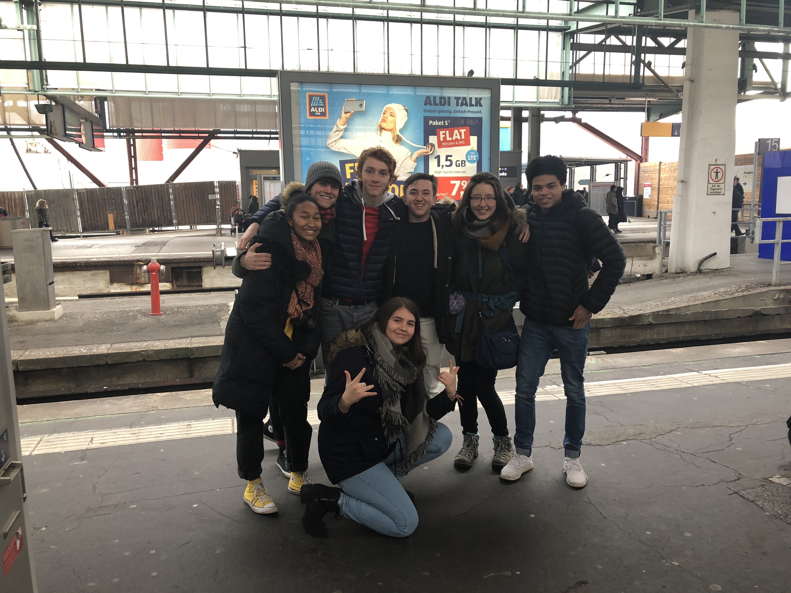
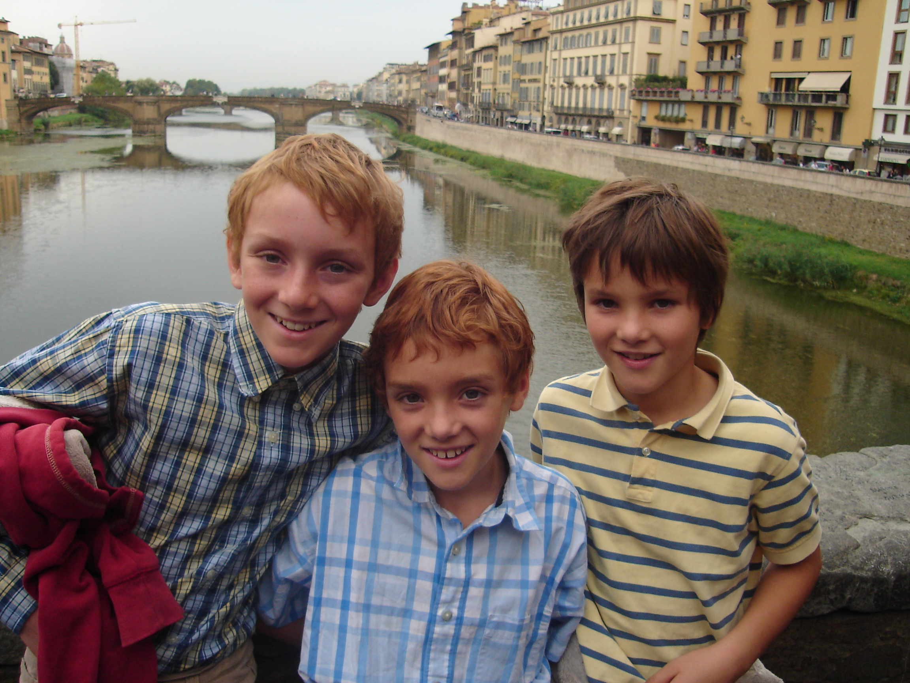
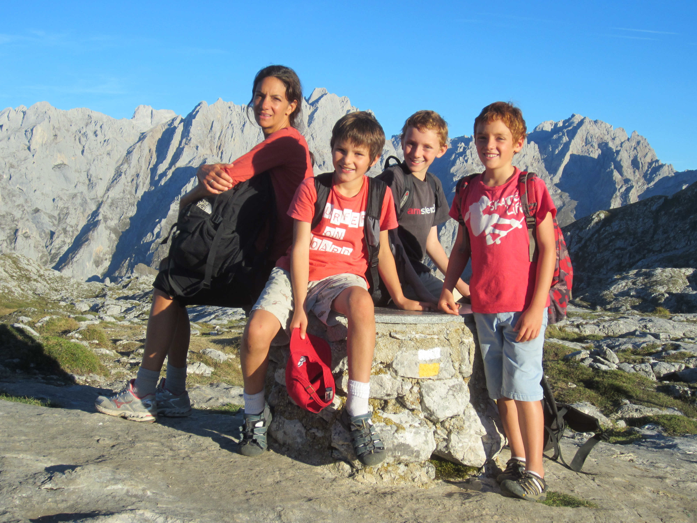
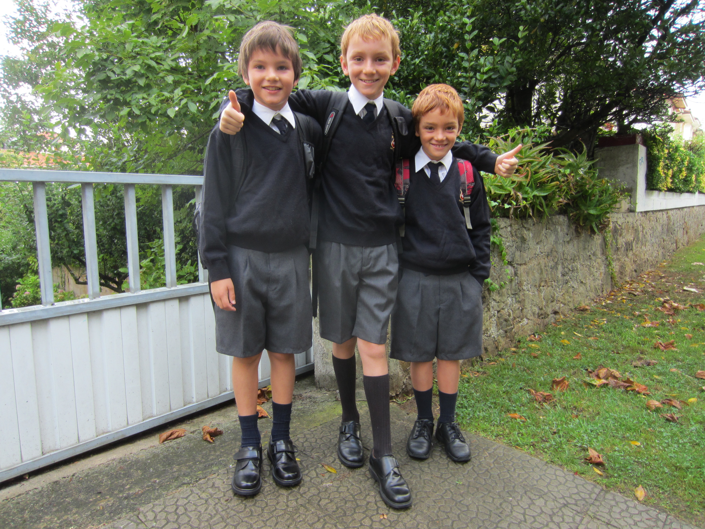

Diego lived in Germany with a host family from August 2018 to July 2019. He was located in Baden-Württemberg, just outside of Stuttgart. During this time he learned "high" German in school, but also got to experience the local dialect, Schwäbisch (Swabian). This dialect is imfamous throughout Germany for funny and weird pronounciation.
  Diego lived in Santander, Spain with his family from September 2011 to July 2014. He went to a public catholic school with nuns and played baseball with the city's only team. Unlike in southern Spain, Diego experienced a moderate Spanish accent. Diego and his two younger brothers, Mitch and Henry, are captured below.
  